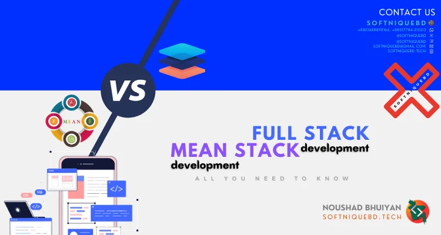
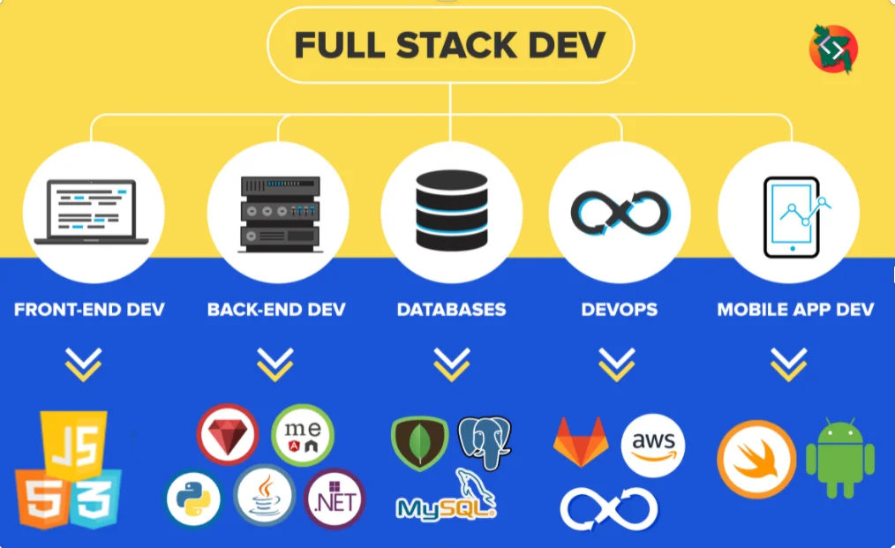
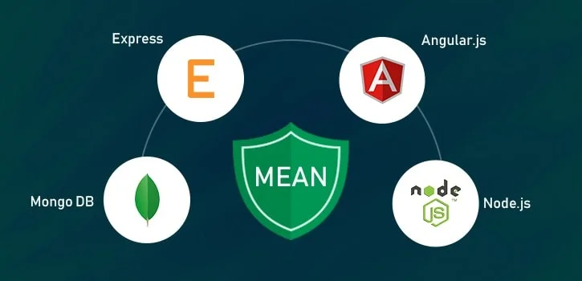

Full Stack vs MEAN Stack: All You Need To Know

Full Stack development and MEAN Stack development have proven their importance in the domain of custom software development.Though both these stacks are highly popular among developers, some aspects make them different from each other. It is necessary to understand the points of differences to select the right tech stack for your upcoming software development project.
What does stack mean by software development?
A stack is a combination of languages, frameworks, and technologies used in the creation of mobile app development and web development
Generally, any software is divided into two parts – client-side and server-side, also known as front-end and back-end. The selection of the right tech stack has a great impact on the growth and success of the web application.
Here, we are talking about two popular stacks – MEAN stack and Full Stack. Let’s discuss Full stack vs MEAN stack in detail.
What is Full Stack Development?

Full Stack development involves both front-end and back-end parts of web application development. Full Stack is an umbrella term and it is not restricted to any particular software or tool.
Front-end refers to the front part of the application or UI which is seen by the end-user and used for end-user interaction. The back-end part is related to server-side development, database, and API development.
Who Is A Full-Stack Developer?
A full-stack developer is a person who is proficient in several languages and frameworks for client-side and server-side programming. They don’t require learning all the technologies or tools available in the market. However, they must possess the knowledge of developing applications entirely from UI design to development and deployment.
What Are The Benefits Of Hiring Full-Stack Developers?

- They can easily switch between different programming languages and frameworks
- Knowledge of UI/UX and suitable architecture
- Ability to turn ideas into reality from concept to actual implementation
- Knowledge of various databases like MySQL, MongoDB, Oracle, SQL server
- Can deal with server setups and deployments
- API development and implementation
- They can work upon a range of programming languages for frontend and backend such as Java, C#, .NET, Python, and JavaScript
- They are quite faster to adopt new technologies or concepts
- Familiar with modern architectural concepts like cloud, microservices, containerization, and orchestration
What Are The Technology Stacks For Full-Stack Development?
With the increased usage of open-source software and agile approach to development, full-stack development is getting a makeover with new frameworks and tools.
Popular Tech Stack For Full-Stack Development:
- LAMP Stack:
L for Linux Operating System, A for Apache server, M for MySQL database server, and P for PHP Language
- MEAN Stack:
In MEAN stack, M represents MongoDB( popular NoSQL Database), E stands for Express.js, A for Angular which is frontend framework and N represents cross-platform runtime environment
- MERN Stack:
This is the same stack as MEAN, just Angular is replaced by React.
For any full-stack developer, knowledge of HTML, CSS, And JavaScript is a must and with that front-end knowledge, they must deal with server-side programming too.
Apart from this, developers can choose languages like Python, Java, and frameworks like .Net and RoR to develop full-stack applications.
Skills Required To Become Full-Stack Developers:
Full-stack developers have to play more than one role in web development processes. From architecting user requirements to front-end, back-end, and database management, they need to obtain broader perspectives for usability, accessibility, and quality of the system.
They must possess:
- Knowledge of essential front-end technologies like HTML, CSS, JavaScript
- At least one server-side programming language like Java, Python, PHP, Ruby, and so on
- Database management and caching mechanism
- Server and configuration management
- Version control systems
- Basic UI/UX design
- Project management skills
- Security awareness
- Agile development approach
Knowledge of, automated tests, and modern development architecture like, containerization, and container-orchestration can be the icing on the cake. Upcoming years will see a notable rise in full-stack development as they are known for their capability to build end-to-end systems.
Disadvantages Of Hiring Full Stack Developers
- They sometimes lack in-depth knowledge and that leads to delay and misperceptions
- They are often overloaded with the tasks
- Dependency on the Full Stack developer is higher and they are difficult to replace
- It’s difficult to stay updated with every update of all frameworks/technologies
What is MEAN Stack Development?
MEAN Stack development is a process to build advanced and dynamic web applications using JavaScript (JS)-based technologies. The full form of MEAN is MongoDB, Express.js, Angular, and Node.js.
Simply put, MEAN Stack is one of the most popular Full Stack frameworks. Unlike MEAN Stack developers, all the Full Stack developers have a good knowledge of all technologies used for frontend and backend development.
Benefits Of Hiring MEAN Stack Developers:
- Possess the experience of working on the database, frontend, and backend
- Expertise in JavaScript-based technologies and complete web development
- Able to manage every web development phase
- Suitable for cutting-edge web application development
- Able to develop individually and can handle a team of web developers
What Are The Disadvantages Of Hiring MEAN Stack Developers?
It is certainly a framework that is adopted by a number of leading organizations and utilizes benefits it has to offer but there are several disadvantages of the MEAN stack.
- Lacks the ability to work on quite large-scale enterprises due to only JavaScript experience
- Knowledge and scope are limited compared to full-stack development
- Require more time to switch to different technologies/tools except for JavaScript
- Developers must be able to have Node.js expertise to leverage its scalability and reliability
How Full Stack is Different than MEAN Stack
- Technology- Full Stack development needs knowledge of several web technologies for frontend and backend development. It also demands insight for deployment, design, optimization, and automation of web applications. It is necessary for Full Stack developers to work on a diverse range of tools and technologies for developing complex web apps.
In contrast to this, MEAN Stack demands knowledge of only 4 JavaScript-based frameworks and a database to build a feature-rich web application.
- Development Process- Full Stack development is highly versatile and developers can work on client-side and server-side alike. This process also ensures seamless performance and regular customization of the website or web apps.
MEAN Stack development, on the other hand, needs expertise in JavaScript-based frameworks as it involves JavaScript in both frontend and backend development.
- Frameworks- As mentioned above, Full-Stack developers have knowledge of multiple web technologies and frameworks. They can work on a diverse range of projects. What’s more, database knowledge is not restricted to MongoDB like in MEAN Stack development.
MEAN Stack development requires the insight of MERN, which stands for MongoDB, Express, React, and Node.js. MEAN Stack developers are proficient in any JS-based frameworks including React and Node. They can also learn to work on tools and frameworks similar to React and Express.js.
- Tools- Full Stack developers can use any tools from various web development technologies and frameworks including PHP, C++, Java, and Python. They need to know at least one framework for the backend and frontend development of modern web apps.
In MEAN Stack development, MongoDB database, Express.js, and Node.js frameworks, and Angular are involved to build responsive and user-friendly, real-time web applications. This process does not involve any other technologies.
How do these two stacks redefine Web App Development?
To understand these stacks in detail, we first need to understand how they relate to web development. As we have mentioned earlier, web development or any software development has two components – backend and frontend.
The frontend is the face of the application. It is used by end-users to interact with the website or app. It includes design, user experience (UX), user interfaces (UI), graphics, content, and components that are related to the look-and-feel of the website.
Backend is the backbone of the application. It’s a part that is not visible to end-users neither the processes. The backend is a logical part where data is stored, processed, manipulated, and sent to the frontend for presentation. All functionalities of the website are programmed in the backend. It mainly targets ‘responses’ given to users that include processed data or calculated results.
Both these parts require different technologies yet they complement each other. While the frontend requires technologies like JavaScript, HTML, and CSS, backend focuses on database management and server-side programming.
This is where Full Stack and MEAN stack differs.
MEAN stack is one of the popular Full Stack frameworks consisting of JavaScript-based technologies like MongoDB, Express.js, Angular, and NodeJS. On the other hand, Full Stack means having a knowledge of developing both – frontend and backend parts of the website.
Full Stack is a broad concept and requires a set of languages, tools, and concepts to learn, unlike MEAN. In MEAN stack, you will require knowledge of 4 frameworks mentioned in this acronym (first letter of each). MEAN is Full Stack because it consists of:
MongoDB – a database
Express.js – Backend web application framework for Node.js
Angular – Frontend web framework
Node.js – Backend JavaScript runtime environment
This together makes MEAN a complete web development framework. MEAN has played a significant role in increasing the popularity of Full Stack. This is because MEAN stack developers are capable of developing a whole web application that includes database management, frontend, and backend using JavaScript-based frameworks.
Full Stack vs MEAN Stack Key Differences
| Full Stack Development | MEAN Stack Development |
|---|---|
| It is useful for building robust web applications | It focuses on 4 frameworks – MongoDB, Express.js, Angular, and Node.js |
| It is not limited to JS (JavaScript). | It is restricted to JS-based tools and technologies |
| It enables developers to work on multiple client-side and server-side frameworks | MEAN Stack developers are proficient in 4 frameworks |
| It needs mastery in different programming languages | It needs expertise in JavaScript along with frontend and backend development |
| Full Stack development is high in demand because of its ability to deal with diverse tools | When a JS-based web app is required, MEAN Stack is an ideal choice |
| Full Stack developers must possess analytical, management, and architectural skills | MEAN Stack developers are a kind of Full Stack developers |
| Full Stack development can earn more money for developers | MEAN Stack developers are paid less than Full Stack developers |
Which Is Better: MEAN Stack Or Full Stack?
In a nutshell, there is no place for the question- Which is better- MEAN Stack development or Full Stack Development? It is because choosing the right approach or technology depends on various factors like budget, timeline, and resource availability. Full Stack development swiftly gains ground because of its versatility whereas MEAN Stack development is ideal for complex processes that need frequent customization.
Technically, this question simply does not make any sense as MEAN stack is a popular and widely-adopted Full Stack for web development.
Full Stack has increased in popularity due to its versatile role in this product-driven world. To make your customers happy, you need to develop faster and release faster. And to accomplish this, organizations need skills and responsibilities that save time and achieve goals using innovative and modern approaches. Definitely, Full Stack developers are the most sought-after skill in the upcoming years.